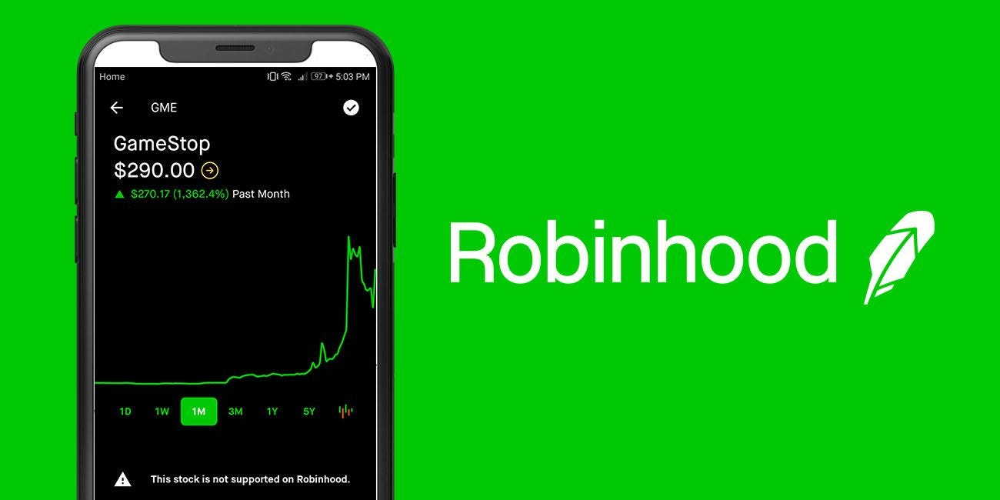
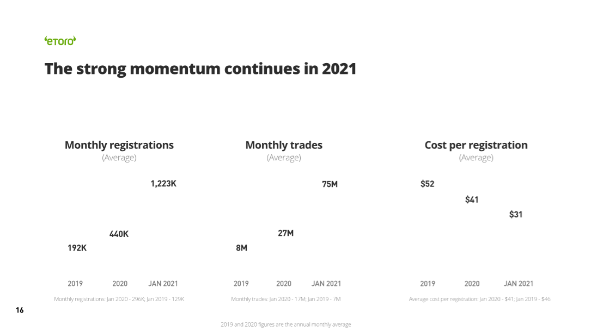
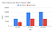
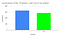

From stock options to Stonkions
The raizing Don't Be RobinHood movement


Months since the short squeeze of gamestop’s stock which is now fluctuating around $213.52 per share. During these periods a lot of things have have happened both inside and outside the company. For example the board of directors have recently decided to Announce Additional Board Refreshment to Accelerate Transformation in order to better implement this project of Gamestop being the leader of the gaming online retail segment that was sold to the individual short squeezer led by some influencers of the reddit’s group wallstreetbet.
RobinHood have also added 6 million users since this event and is planning to go public through IPO but RobinHood was not the only online brokerage firm to benefit from the short squeezes but platforms like Etoro have also seen an increase of the volume of trades as you can see in the this slide of its SPAC deck

in January 2021 etoro had 75 million average monthly trades compared to the 27 Million of the year 2020, Meaning that that the whole investment services that have been booming during this year 2021 because of this event.
Like RobinHood, Etoro is also going public but through a SPAC which is an old investment concept now being privileged by startups that need to raise money.
Then we have now two major online trading platforms that will raise billions of dollar, it is important to know where will we, data driven investors, stand once all these amounts of cash are invested in them.
as of today September 2, 2021 the volume of short sale of the Gamestop is still huge representing more than 40% the total daily volume
jLike if the market is not believing believing in the price level of GME which seem to be considered still high

While trying to raise fund what I have constated is that each these two trading platform is trying to position itself by trying to differentiate itself from the other and this goes as far as seeing the founders post joke tweet like this one below
As you can see Yoni Assia, the founder of Etoro a trading platform that competes with Robinhood for the growing market of individual traders like you and me who from our computers or smartphone would be able to get access to the financial markets and make profitable investments, is supporting a with a bit of humor this Twitter hashtag that seems to promote leaving RobinHood trading platform but at the beginning it was not its purpose.
But I am highly recommending data driven investors to not be Robin but to be clearly focusing on how to profit from the financial markets by using any kind of trading platforms and constantly exploring data for having more precise idea about where to put your money. Having a long term investment scope is better when you are using such kind of platform like RobinHood and Etoro because these platforms are not really for day trading and day trading is capital intensive activity that you should leave to investor with big amount of capital under management.
Then dontBeRobin could be seen as a movement for grouping and protecting individual online data driven investor like you and me. We could work in a way that make financials systems centered and focused in growing our portfolio of investment not only the pockets of some financials firms and trading venues.
While writing this Book about GameStop that I started year ago this was the intention I had but this couldn’t be implemented without your commitment to connect with other data driven investors like me and a medium like this data driven investor publications is a formidable starting point for communicating our pains and needs about the financial markets.
Let’s make this DontBeRobin online tribe alive and let it serves us not RobinHood neither Etoro but US data driven investors.
PS: in my last article I shared some metrics about my writings what I missed is to show how I was using the pronouns I and YOU which can be a proxy for knowing how often I write about you and how often it only about me. Here is the chart

I think that I am a lot about YOU but I should work harder to reverse the trends and make my number of usage of the pronoun You bigger than the number of usage of I.